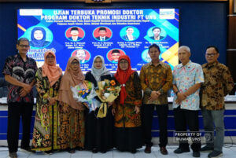
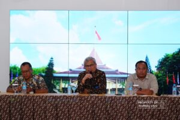
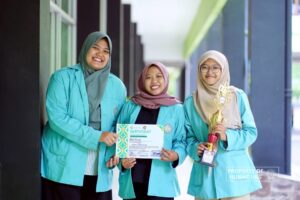

Jalan Ir. Sutami 36 Kentingan, Jebres, Surakarta, Jawa Tengah. Indonesia 57126.
Telepon 0271-646994 | Faksimile : 0271-646655
WA (+62) 851 5672 3341
Berita terkini terkait Universitas Sebelas Maret

UNS – Program Studi (Prodi) Doktor (S3) Teknik Industri Fakultas Teknik (FT) Universitas Sebelas Maret (UNS) Surakarta berhasil meluluskan Doktor
22 Oktober 2024

UNS — Rektor Universitas Sebelas Maret (UNS) Surakarta, Prof. Dr. Hartono, dr. M.Si. menggelar acara silaturahmi dengan wartawan dari berbagai
23 Oktober 2024

UNS— Mahasiswa Fakultas Kedokteran (FK) Universitas Sebelas Maret (UNS) Surakarta kembali menorehkan prestasinya setelah berhasil meraih juara 2 kategori poster
22 Oktober 2024
Jalan Ir. Sutami 36 Kentingan, Jebres, Surakarta, Jawa Tengah. Indonesia 57126.
Telepon 0271-646994 | Faksimile : 0271-646655
WA (+62) 851 5672 3341